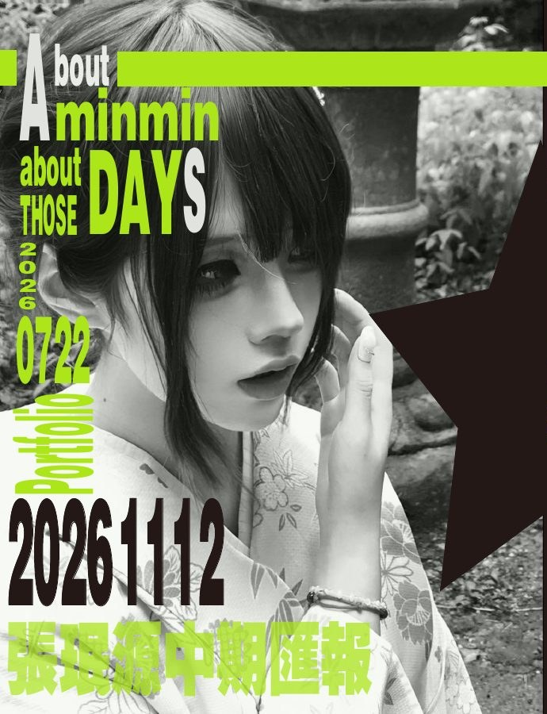
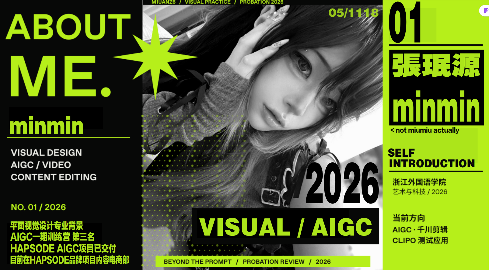
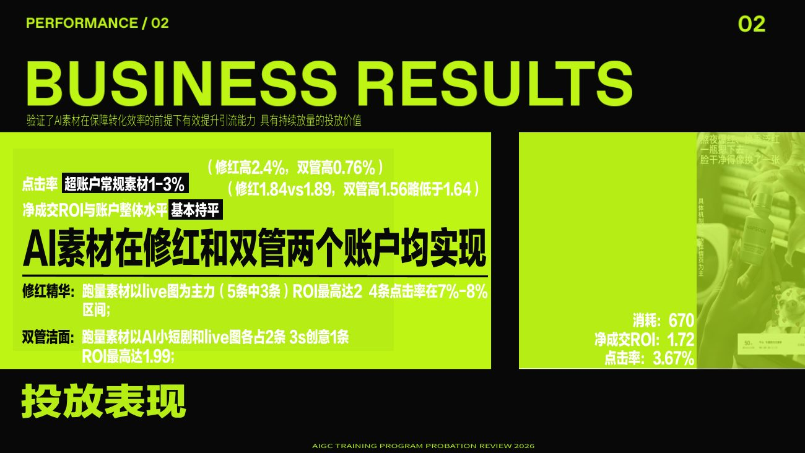

VISUAL / AIGC
CREATIVE × BUSINESS
ABOUT / MINMINCREATIVE × BUSINESS
2026
DESIGNER / AIGC CREATOR / EDITORSCROLL TO DISCOVER ↓

CONTINUE / PERFORMANCE ↓01 / PERFORMANCEAI OUTPUT × BUSINESS RESULTS
PERFORMANCE
PRODUCTION CAPACITY
15+
VIDEOS / DAY
13LIVE 类素材
02创意视频
高峰单日产出 20 条；常规手工信息流剪辑约 5 条/日（个人实践对比）
BUSINESS
RESULTS
RESULTS
在修红精华、双管洁面账户的实际测试中，AIGC 素材展现了可用于投放的表现。
+1–3%点击率高于账户常规素材的区间表现
≈净成交 ROI 与账户整体水平基本持平

注：指标对应上传汇报中的项目测试结果，不代表全部素材的统一表现。
02 / CREATIVESELECTED WORKS · CLICK TO PLAY
CREATIVE.
五支独立制作 / 参与制作的 AIGC 视频样片
点击封面，直接观看完整视频。
REAL PROJECT VIDEOS / FIVE SELECTED WORKS↑ CLICK ANY COVER TO VIEW
03 / WORKFLOWSOP × SCALE
REPEATABLE
WORKFLOW.
从单条素材制作经验，沉淀为可复用的批量生产方法。
01
素材收集
检索产品素材
拆解爆款参考
02
文案适配
复用有效文案结构
匹配产品卖点
03
AI 生成
构建画面与动态
批量生成素材
04
视觉优化
去除无关元素
校正产品细节
05
成品交付
检查质量与合规
标准化输出
SCALE.
REUSE复用有效文案与素材结构
EFFICIENCY减少重复操作
CONSISTENCY统一质量检查标准
04 / GROWTHFROM VISUAL TO BUSINESS THINKING
GROWTH ≠ THE END.
BEFORE / AIGC PRODUCTIONVISUAL
VISUAL
EXPRESSION
注重生成效率、视觉创意和规模化 SOP。
NOW / QIANCHUAN EDITINGBUSINESS
BUSINESS
THINKING
更多关注产品卖点、视频节奏与素材的实际投放场景。
STRUCTURERHYTHMCONVERSION
TOOL FEEDBACK / CLIPO
发现问题。
提出改进。
WORKFLOW关键词检索、素材预览与快速替换
MATERIAL按人物数量与产品展示筛选素材
AUDIO补充中文热门配音及投流背景音乐
05 / BEYONDFUTURE PLANNING & PERSONAL VALUE
WHAT’S
NEXT?
DELIVER / 01
夯实当前业务
持续优化千川信息流剪辑，提升卖点提炼与素材判断能力。
OPTIMIZE / 02
沉淀可复用方法
完善 AIGC 与剪辑 SOP，将实践经验转化为可优化的工作流程。
EXPAND / 03
拓展创意项目
发挥视觉设计和 AIGC 能力，探索短片、互动作品与网站表达。
MY VALUE / 个人价值视觉审美 + AI 内容生产 + 电商内容理解复合型创意能力
BEYOND THE
PROMPT.
minmin张珉源 / 2026BACK TO TOP ↑